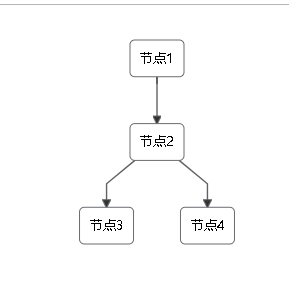

项目中想搞定一个流程图，开始使用了阿里的G6，但是G6目前不支持手势，这样就很郁闷了，因为公司的领导都是使用iPad看的，你不支持手势是不行的，后来又想到了百度的echarts，试了试，感觉还不错，手机端也是没问题的，但是用起来不是很好用，每个节点的位置还要自己去设置计算有点麻烦，所以想找个在支持pc和wap并且使用方便的，结果找到了dagre-d3.js，完全满足我的需求啊，就是文档不全，还大多数都是英文。搞完之后觉得有必要记录一下，哈哈哈。
首先避免不了的就是下载，既然是基于d3的肯定是要连同d3一下下载的。
npm install d3npm install dagre-d3下载完毕就开始使用了，如果下载的时候报错了可以尝试cnpm下载。
下载完之后就要说说数据结构了,如下图：
，
从图中我们可以知道需要两个数据，第一个是节点信息，包含节点名称、ID、状态等等只要是节点信息都可以放在里边；第二个是节点之间的关系，可以简单的理解成管道，比如从节点1--->节点2。
所以我们的数据结构是这样的：
1 list: {
2 nodeInfos: [
3 {
4 id: "node1",
5 label: "节点1",
6 },
7 {
8 id: "node2",
9 label: "节点2",
10 },
11 {
12 id: "node3",
13 label: "节点3",
14 },
15 {
16 id: "node4",
17 label: "节点4",
18 },
19 ],
20 edges: [
21 {
22 source: "node1",
23 target: "node2",
24 },
25 {
26 source: "node2",
27 target: "node3",
28 },
29 {
30 source: "node2",
31 target: "node4",
32 },
33 ]
34 }其中nodeInfos是节点信息，edges是节点之间的关系，当然节点的信息可以包含很多信息，比如节点的形状、大小、背景颜色，圆角等等，同时也可以在设置节点信息的时候添加或者根据你自己节点的状态判断显示什么样的样式。接下来就是绘制流程图了，首先呢需要先获取实例对象并且做一些简单的配置。我们直接使用默认的就可以。
1 var g = new dagreD3.graphlib.Graph().setGraph({}).setDefaultEdgeLabel(function() { return {}; });接下来就是添加节点
this.list.nodeInfos.forEach((item, index) => {
g.setNode(item.id, item);
});然后在加上节点关系
this.list.edges.forEach(item => {
g.setEdge(item.source, item.target, {});
});最后就是绘制图形了
var svg = d3.select("svg"),
i nner = svg.select("g");
//缩放
var zoom = d3.zoom().on("zoom", function () {
inner.attr("transform", d3.event.transform);
});
svg.call(zoom);
var render = new dagreD3.render();
render(inner, g);这样简单的流程图就完成了，如果想加点击事件呢，可以这样
let code;
inner.selectAll("g.node").on("click", e => {
//点击事件
code = this.list.nodeInfos.filter(item => {
return item.id == e;
});
console.log(code);
});最最简单的一个流程图组件就完成了，当然了dagre-d3.js不仅仅是这点功能，还有许多可以设置的，大家多练一练就可以喽。